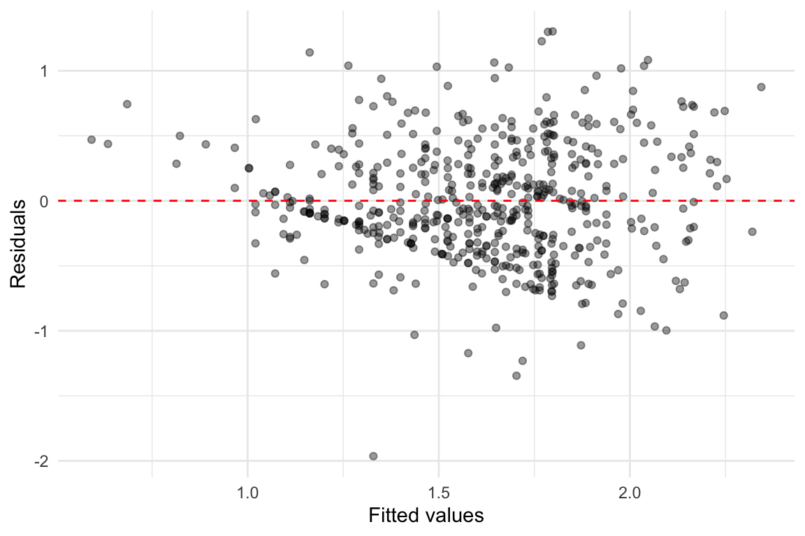
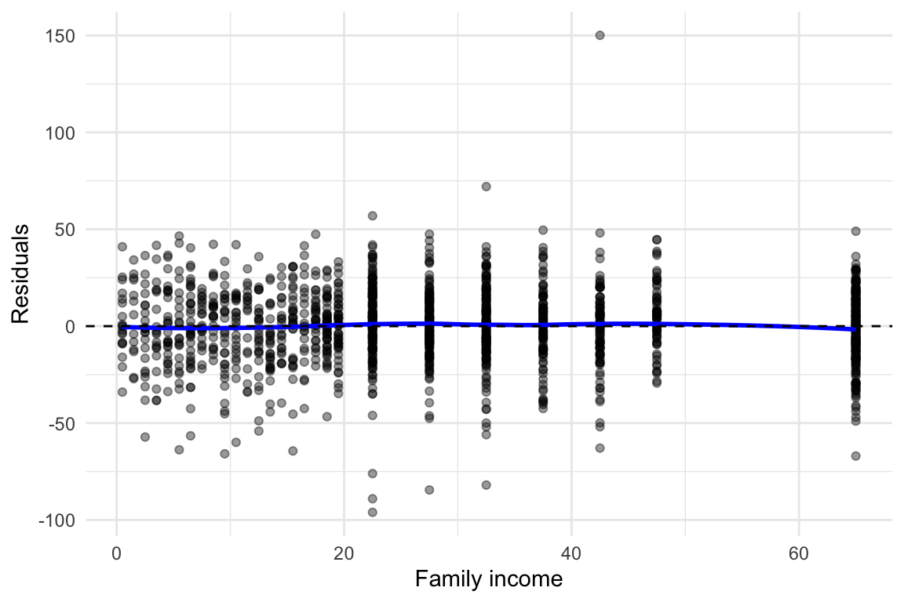
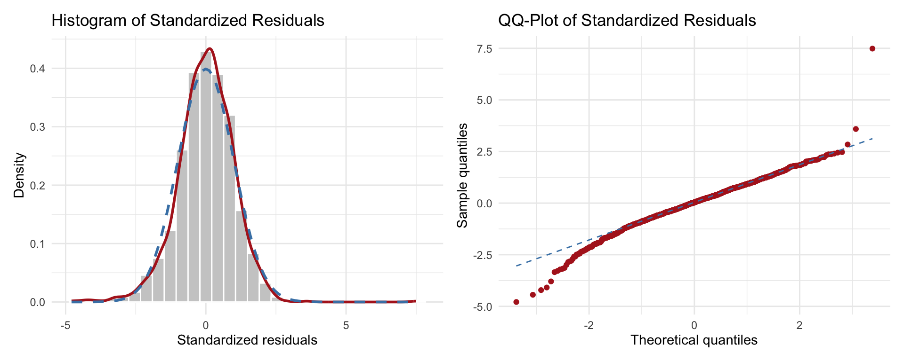
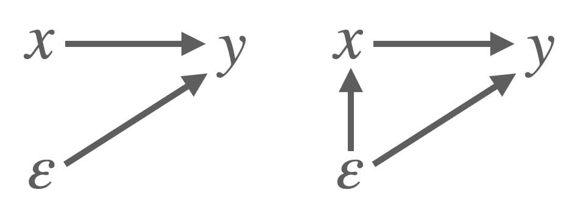
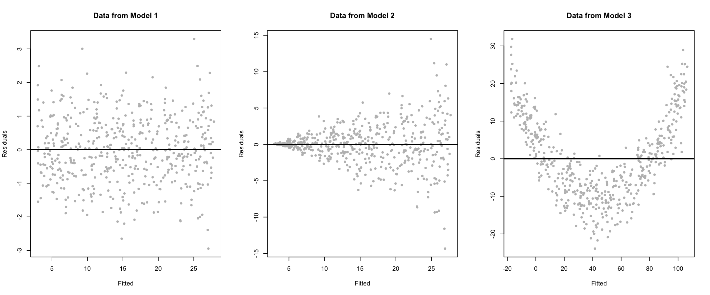
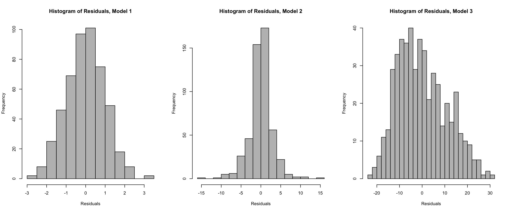

Call:
lm(formula = log(wage) ~ educ + exper + exper2, data = wage1)
Residuals:
Min 1Q Median 3Q Max
-1.96387 -0.29375 -0.04009 0.29497 1.30216
Coefficients:
Estimate Std. Error t value Pr(>|t|)
(Intercept) 0.1279975 0.1059323 1.208 0.227
educ 0.0903658 0.0074680 12.100 < 2e-16 ***
exper 0.0410089 0.0051965 7.892 1.77e-14 ***
exper2 -0.0007136 0.0001158 -6.164 1.42e-09 ***
---
Signif. codes: 0 '***' 0.001 '**' 0.01 '*' 0.05 '.' 0.1 ' ' 1
Residual standard error: 0.4459 on 522 degrees of freedom
Multiple R-squared: 0.3003, Adjusted R-squared: 0.2963
F-statistic: 74.67 on 3 and 522 DF, p-value: < 2.2e-1631 Residual Analysis and Model Diagnostics
When conducting statistical analysis and drawing conclusions, we usually rely on certain assumptions about the underlying data-generating process. In regression analysis, these assumptions allow us to make valid inferences about the relationship between the dependent variable and one or more independent variables.
Because the independent variables divide the full dataset into many subpopulations (based on the values of the predictors), regression analysis can be viewed as simultaneously studying the behavior of the dependent variable across these various groups.
In order to make reliable predictions and interpretations that generalize to the whole population—or to unseen data—we must make assumptions about the structure of the model and the behavior of the residuals (errors). If these assumptions are not at least approximately satisfied, the conclusions drawn from the model may be misleading.
This is where residual analysis and model diagnostics come in: they help us verify whether the assumptions behind the regression model hold in practice. In the following section, we will review these assumptions and learn how to evaluate them using graphical and statistical tools.
31.1 Constant Variance Assumption (Homoskedasticity)
One of the key assumptions of the classical linear regression model is that the variance of the error term remains constant across all observations. This assumption is known as homoskedasticity, and it is formally stated as:
The error term has constant variance, i.e.
\(\operatorname{Var}(\varepsilon_i \mid X) = \sigma^2\) for all \(i\).
When this assumption is violated—meaning the error variance changes with the level of one or more explanatory variables—the model is said to exhibit heteroskedasticity.
31.1.1 Why does heteroskedasticity matter?
Although ordinary least squares (OLS) estimation still produces unbiased and consistent coefficient estimates in the presence of heteroskedasticity, its inferential properties break down. In particular, the usual formulas for calculating standard errors, t-values, and confidence intervals are no longer valid. This means that even if the point estimates are correct on average, we may draw incorrect conclusions from hypothesis tests or construct misleading confidence intervals.
Thus, heteroskedasticity does not bias the estimates of the regression coefficients, but it does make our statistical inference unreliable.
To understand the practical implications, consider the role of the OLS standard errors. These are used to test hypotheses, construct confidence intervals, and perform F-tests. If the assumption of homoskedasticity fails, the standard errors are misestimated (often too small) leading to overly optimistic results. For example, a t-test might suggest that a coefficient is statistically significant when it is not.
Even in large samples, heteroskedasticity can persist, and its effects on inference remain. Therefore, it is essential to detect and correct for heteroskedasticity before making conclusions based on statistical significance.
31.1.2 Addressing heteroskedasticity
If heteroskedasticity is suspected or detected, we can still proceed with regression analysis by adapting our tools. Instead of relying on standard OLS inference, we use robust standard errors, which correct for the presence of non-constant error variance. These robust errors allow us to compute valid t-statistics and confidence intervals, even if the errors are heteroskedastic.
Robust standard errors are easy to implement in most statistical software and are often used by default in empirical research for this reason. While they do not change the coefficient estimates themselves, they adjust the variability around them, providing more accurate inference.
Example 31.1: Detecting and Correcting for Heteroskedasticity
To see how heteroskedasticity works in practice, we revisit the wage example from previous chapter. We will model the log of hourly wage (\(\log(y)\)) as a function of education (\(x_1\)), experience (\(x_2\)), and experience squared:
\[ \log(y) = \beta_0 + \beta_1 \cdot x_1 + \beta_2 \cdot x_2 + \beta_3 \cdot x_2^2 + \varepsilon \]
This model allows us to account for the nonlinear effect of experience on wages while estimating the returns to education.
An informal but useful way to detect heteroskedasticity is to plot the residuals against the fitted values from the model. If the variance of the residuals increases or decreases systematically with the fitted values, we likely have heteroskedasticity.

We observe a funnel shape; where the spread of residuals increases with fitted values, that indicates increasing error variance, which is a form of heteroskedasticity.
Even if heteroskedasticity is present, we can still conduct valid inference by using robust standard errors. These correct the standard errors without changing the coefficient estimates.
t test of coefficients:
Estimate Std. Error t value Pr(>|t|)
(Intercept) 0.12799752 0.10712606 1.1948 0.2327
educ 0.09036582 0.00778267 11.6112 < 2.2e-16 ***
exper 0.04100887 0.00502368 8.1631 2.464e-15 ***
exper2 -0.00071356 0.00010978 -6.5001 1.877e-10 ***
---
Signif. codes: 0 '***' 0.001 '**' 0.01 '*' 0.05 '.' 0.1 ' ' 1Robust standard errors may be larger or smaller than the original OLS standard errors. When heteroskedasticity is strong, the differences can be substantial. In such cases, relying on the conventional (non-robust) inference may lead to misleading conclusions about significance levels and confidence intervals.
Therefore, it is good practice to report robust standard errors whenever there is a suspicion of heteroskedasticity or even by default in many empirical studies.
31.1.3 Formal Test for Heteroskedasticity: Breusch-Pagan Test
While residual plots can give us informal evidence of heteroskedasticity, we can also conduct a formal statistical test. One commonly used method is the Breusch-Pagan (BP) test.
The null hypothesis of the BP test is that the error variance is constant across all observations (i.e., homoskedasticity). The alternative is that the variance of the errors depends on one or more of the explanatory variables.
We test:
\[ H_0: \operatorname{Var}(u_i \mid x_1, x_2, \dots, x_k) = \sigma^2 \quad \text{(homoskedasticity)} \]
against
\[ H_1: \operatorname{Var}(u_i \mid x_1, x_2, \dots, x_k) \neq \sigma^2 \quad \text{(heteroskedasticity)} \]
STep-by-step, we then do the folllwing:
- Estimate the original regression model and obtain the OLS residuals.
- Square the residuals and regress them on all the explanatory variables.
- Perform an F-test (or LM test) on the joint significance of the regressors.
- If the test is significant, we reject the null hypothesis of homoskedasticity.
Example 31.1: Detecting and Correcting for Heteroskedasticity (Cont’d)
The test for our example is given below:
studentized Breusch-Pagan test
data: model
BP = 19.84, df = 3, p-value = 0.0001832The test returns a \(p\)-value.
- If the \(p\)-value is less than your significance level (commonly 0.05), you reject the null hypothesis of constant variance.
- This suggests the presence of heteroskedasticity, meaning that standard OLS inference may not be valid.
As seen, heteroskedasticity is detected here as well, and we should proceed by using robust standard errors, as shown above.
Weighted Least Squares (WLS)
In situations where heteroskedasticity is present, another possible remedy—besides using robust standard errors is the Weighted Least Squares (WLS) method.
The main idea behind WLS is to transform the regression equation so that the new errors become homoskedastic. This is done by giving less weight to observations with higher variance and more weight to those with lower variance. When the form of heteroskedasticity is known or can be estimated, WLS can yield more efficient coefficient estimates than OLS.
However, because WLS relies on specifying a correct model for the error variance (which is often difficult in practice), it is not covered in detail in this material. For our purposes, robust standard errors provide a more flexible and commonly used solution.
31.2 Linearity Assumption
One of the most important assumptions in the classical linear model is that the relationship between the dependent variable and the explanatory variables is correctly specified and linear in parameters.If this assumption is violated, the model is misspecified, and the estimates from ordinary least squares (OLS) will be both biased and inconsistent.
Although the term “linear regression” refers to linearity in the parameters, not necessarily in the variables themselves, this still imposes restrictions on the functional form of the model. For example, a simple model like
\[ y = \beta_0 + \beta_1 x + \varepsilon \]
assumes a straight-line relationship between \(y\) and \(x\). However, in many real-world applications, the true relationship may be curved or involve interactions. If we fail to account for this, our model may omit important nonlinearities or combinations of variables.
31.2.1 Functional Form Misspecification
Even when we include the correct variables, the functional form of the relationship between the variables may still be incorrect. This problem is known as functional form misspecification.
Some common techniques to model nonlinearity include:
- Including squared or higher-order polynomial terms: e.g., \(x^2\), \(x^3\)
- Including interaction terms between variables: e.g., \(x_1 \cdot x_2\)
- Applying transformations such as logarithms: e.g., \(\log(x)\)
One strategy for detecting misspecification is to estimate an unrestricted model that includes these nonlinear terms, and then test whether they can be jointly excluded using an F-test. However, this approach requires knowing which nonlinear terms to include ahead of time which is not always the case.
31.2.2 The RESET Test
To address this limitation, we can use a general test for functional form misspecification known as the RESET test (Regression Specification Error Test), developed by Ramsey. The core idea is that in a correctly specified model, no nonlinear functions of the fitted values should be significant when added to the regression.
The test proceeds by augmenting the original model with powers of the fitted values:
\[ y = \beta_0 + \beta_1 x_1 + \cdots + \beta_k x_k + \delta_1 \hat{y}^2 + \delta_2 \hat{y}^3 + \varepsilon \]
The null hypothesis is that the additional nonlinear terms do not improve the model:
\[ H_0: \delta_1 = 0,\ \delta_2 = 0 \]
If we reject \(H_0\), it suggests that the model may be misspecified and that important nonlinear terms or interactions have been omitted.
31.2.3 Visual Checks for Linearity
In addition to formal tests such as the RESET test, we can visually assess whether the linearity assumption is reasonable by plotting the residuals from our regression model.
Two standard plots are especially useful:
-
Residuals vs. Fitted Values
- Residuals vs. Individual Predictors
Both types of plots help reveal patterns that may suggest the model is misspecified, for example, by omitting nonlinear relationships.
Example 31.2: Birth Weight Data
To illustrate the linearity assumption further, consider a model using data from the bwght dataset, which contains information on birth weight (bwght) and maternal characteristics.
We begin with a general regression model:
\[ y = \beta_0 + \beta_1 x_{1} + \beta_2 x_{2} + \varepsilon \]
where:
- \(y\): birth weight of child (in ounces)
- \(x_{1}\): number of cigarettes smoked per day during pregnancy
- \(x_{2}\): family income (in thousands of dollars)
The model can then be specified as:
\[ \text{bwght} = \beta_0 + \beta_1 \cdot \text{cigs} + \beta_2 \cdot \text{faminc}+ \varepsilon \]
We estimate this model using OLS and then check the residuals to assess whether the linear form is appropriate.
We estimate the model in R:
Call:
lm(formula = bwght ~ cigs + faminc, data = bwght)
Residuals:
Min 1Q Median 3Q Max
-96.061 -11.543 0.638 13.126 150.083
Coefficients:
Estimate Std. Error t value Pr(>|t|)
(Intercept) 116.97413 1.04898 111.512 < 2e-16 ***
cigs -0.46341 0.09158 -5.060 4.75e-07 ***
faminc 0.09276 0.02919 3.178 0.00151 **
---
Signif. codes: 0 '***' 0.001 '**' 0.01 '*' 0.05 '.' 0.1 ' ' 1
Residual standard error: 20.06 on 1385 degrees of freedom
Multiple R-squared: 0.0298, Adjusted R-squared: 0.0284
F-statistic: 21.27 on 2 and 1385 DF, p-value: 7.942e-10The linearity assumption in multiple regression requires that the relationship between each predictor and the dependent variable is linear, while holding other variables constant. To assess this visually, we can plot residuals against each explanatory variable. A well-specified model will show residuals scattered randomly around zero without systematic patterns.
The plot below shows the residuals versus family income from the fitted multiple linear regression model.

In this case, we see the following:
- The residuals appear randomly distributed across the range of family income.
- The blue LOESS curve is nearly flat, suggesting no systematic deviation from linearity.
- There is no visible curvature, so a linear term for
famincappears appropriate. - Some variation in spread (larger residual spread at lower income levels) could indicate heteroskedasticity, but this does not affect the linearity assumption directly.
We would here conclude no evidence of non-linearity in the relationship between family income and birth weight. Thus, the linearity assumption for faminc seems reasonable.
Note
You can repeat this kind of residual check for each predictor (e.g., cigs) to evaluate the linearity assumption across the full model.
31.3 Normality Assumption
In the classical linear model, one assumption states that the error terms should be normally distributed:
\[ \varepsilon_i \sim \mathcal{N}(0, \sigma^2) \]
This assumption is not required for OLS to be unbiased or consistent. However, it is crucial for valid inference in small samples; specifically, to ensure that \(t\)- and \(F\)-statistics follow their theoretical distributions. If the errors are not normally distributed:
- \(p\)-values may be incorrect,
- Confidence intervals may not have the advertised coverage rate,
- Type I error rates may deviate from the nominal level.
For large samples, the Central Limit Theorem (CLT) helps mitigate this issue, but for smaller datasets, verifying normality is important.
31.3.1 How Can We Check Normality?
Although the true errors are unobserved, we can again inspect the residuals, which serve as estimates of the errors. Since raw residuals are not ideal for this purpose (they can have unequal variances and be dependent), we typically use standardized residuals (also known as studentized residuals).
There are two common visual tools to assess normality:
- Histogram of residuals overlaid with a normal density curve.
- QQ-plot comparing the distribution of residuals to a normal distribution.
Example 31.2: Birth Weight Data (Cont’d)
We revisit the birth weight regression model:
\[ \text{bwght} = \beta_0 + \beta_1 \cdot \text{cigs} + \beta_2 \cdot \text{faminc} + \varepsilon \]
We assess the normality of the residuals visually.

What can we interpret here?
The histogram shows that the red kernel-density curve is very close to the dashed blue normal curve, indicating that the bulk of the residuals align well with a normal distribution.
The QQ-plot reinforces this impression: most points lie on or very near the dashed reference line, with only mild departures in the extreme tails. A handful of large residuals appear in the upper-right corner, suggesting slight heavy-tail behaviour.
Overall, the residuals look approximately normal. Minor tail deviations are common in real data and, for moderate or large samples, are unlikely to invalidate inference. If precise small-sample inference were critical, we might investigate these outliers or consider robust methods, but no major violation of the normality assumption is evident.
31.3.2 What to Do If Normality Fails?
If these plots show significant deviation from normality, especially in small samples, consider the following actions:
- Apply a transformation (e.g., log or square root) to the dependent variable.
- Add missing nonlinear terms or relevant predictors.
- Consider robust methods or use bootstrapped standard errors.
- Double-check for outliers or data entry issues.
Note
Formal tests like the Shapiro-Wilk test or Jarque-Bera test also exist but are not covered here. Visual checks are often sufficient in practice.
31.4 Zero Conditional Mean Assumption
A key assumption in multiple linear regression is the zero conditional mean assumption:
\[ \mathbb{E}[\varepsilon \mid X_1, X_2, \dots, X_K] = 0 \]
This means that the expected value of the error term should be zero, given all the explanatory variables. In simpler terms, after accounting for the included predictors, there should be no remaining systematic pattern in the errors.
31.4.1 Endogeneity
If this assumption fails, the regression model suffers from endogeneity, which leads to:
- Biased and inconsistent OLS estimates,
- Incorrect estimates of causal effects,
- Invalid confidence intervals and hypothesis tests.
This undermines the entire reliability of the model’s results.
So what is endogeneity?
In regression analysis, endogeneity refers to a situation where one or more explanatory variables are correlated with the error term. This violates a key assumption of the classical linear regression model, which states that the expected value of the error should be zero, conditional on all explanatory variables:
\[ E[\varepsilon \mid X_1, X_2, \dots, X_K] = 0 \]
When this assumption fails, the ordinary least squares (OLS) estimator no longer produces unbiased or consistent estimates. As a result, our coefficient estimates can be misleading and cannot be reliably interpreted as causal effects.
To illustrate the concept see Figure 31.1. Imagine we are estimating a model where log wages (\(y\) )depend on years of schooling (\(x\)). If another variable, say ability which is unobserved, affects both education and earnings, it becomes part of the error term (\(\varepsilon\)). Because education is correlated with ability, it is also correlated with the error term, thus violating the zero conditional mean assumption. As a result, OLS will tend to overestimate the effect of education on wages, attributing to education what is really due to ability.

Endogeneity often arises in practice through several mechanisms. One common cause is omitted variable bias. This happens when a relevant explanatory variable is excluded from the model, and the omitted variable is correlated both with the dependent variable and with one or more included regressors. For example, in a model that aims to estimate the effect of education on wages, failing to control for innate ability, if it affects both education and income, can lead to biased results. The variation in wages attributed to education may in fact be partly due to unobserved differences in ability.
Another source of endogeneity is simultaneity, which occurs when one of the explanatory variables is jointly determined with the outcome variable. A classic example is price and quantity in supply and demand models, where both are determined simultaneously by market forces.
Finally, measurement error in explanatory variables can also lead to endogeneity, especially if the measurement error is systematically related to the dependent variable or other regressors.
Unlike assumptions such as linearity or homoskedasticity, the zero conditional mean assumption cannot be verified with a residual plot. Instead, it requires domain knowledge, thoughtful model specification, and in some cases, instrumental variable techniques or panel data methods.
Here are some practical questions to consider:
- Are all relevant variables included in the model?
- Could any variable be simultaneously influenced by the dependent variable?
- Is there measurement error in the key explanatory variables?
- Is the sample subject to selection bias?
Endogeneity undermines causal inference
When endogeneity is present, we can no longer trust OLS estimates to reflect the true causal effects of our explanatory variables.
Example 31.3: John Snow and the London Cholera Epidemic
In 1855, physician John Snow famously investigated the causes of cholera in London. He hypothesized that cholera was waterborne, a radical claim at the time. However, he faced a challenge: people who consumed contaminated water were also more likely to be poor, live in overcrowded housing, and be exposed to poor sanitation, factors that could independently contribute to illness. This made it difficult to establish a causal link between water quality and cholera using simple correlation.
To overcome this, Snow employed an instrumental variable strategy. He used the identity of the water company supplying a household as an instrument for water quality. Specifically, the Lambeth Water Company sourced its water from an upstream location on the Thames, above the main sewage discharge points, while other companies collected water downstream, from more polluted sections of the river.
Because households typically could not choose their water provider as this was determined by geography, the company serving them provided an exogenous source of variation in water quality. By comparing cholera incidence across areas served by different companies, Snow was able to demonstrate a strong link between contaminated water and disease, helping to establish the modern understanding of waterborne transmission.
31.5 Random Sample Assumption
One of the foundational assumptions of linear regression is that the data comes from a random sample from the population of interest. This means that each observation is drawn independently and has an equal chance of being selected. Under this assumption, the estimators produced by OLS are unbiased and the usual inference procedures (e.g., \(t\)-tests and \(F\)-tests) are valid.
However, when the random sampling assumption is violated, serious problems can arise. For example, if the sample is non-randomly selected, it may not be representative of the broader population. This is known as sample selection bias.
A common form of selection bias occurs when the likelihood of an observation being included in the sample is related to the outcome variable or the error term. For instance, consider a wage regression that includes only individuals who are employed. If the decision to work is related to unobserved factors that also affect wages—like motivation or health—then the sample is no longer random, and OLS estimates will be biased and inconsistent.
Another issue arises with dependent observations, such as data collected from the same individual over time (panel data) or from individuals within the same household or community. In such cases, the assumption of independent errors may no longer hold, leading to underestimated standard errors and overstated statistical significance.
31.5.1 Consequences of Violating Random Sampling
- Bias: If the sample is systematically different from the population, the estimated coefficients may not reflect true population parameters.
- Inconsistency: Even as the sample size grows, estimates do not converge to the correct values.
- Invalid Inference: Standard errors, \(p\)-values, and confidence intervals may be misleading.
Ensuring that the sample is representative of the population is therefore crucial for drawing reliable conclusions from regression analysis. In practice, this means paying close attention to how the data was collected and whether any units were systematically excluded.
In more advanced settings, techniques like **Heckman correction**, **inverse probability weighting**, or **hierarchical modeling** can help address non-random sampling issues.31.6 No Perfect Collinearity Assumption
Another key assumption in multiple linear regression is that the explanatory variables must not exhibit perfect collinearity. This means that no independent variable in the model can be written as an exact linear combination of the others. Formally, if \(x_1, x_2, \dots, x_k\) are regressors, we must not have a situation where:
\[ x_j = \gamma_1 x_1 + \dots + \gamma_{j-1} x_{j-1} + \gamma_{j+1} x_{j+1} + \dots + \gamma_k x_k \]
When perfect collinearity exists, the design matrix becomes singular and cannot be inverted, which is necessary for computing OLS estimates. In other words, OLS cannot be computed when two or more regressors convey exactly the same information.
A classic example is including both a dummy variable for “female” and one for “male” in the same model along with an intercept. Since “male” is just one minus “female,” the two dummies are perfectly collinear with the intercept and each other. Similarly, including both total income and log income may lead to approximate (or in some cases, perfect) multicollinearity.
31.6.1 What Happens if the Assumption Is Violated?
If perfect collinearity is present, the model becomes non-identifiable and the OLS procedure cannot determine unique estimates for the regression coefficients. Statistical software will often drop one of the redundant variables automatically or return an error indicating a singular matrix.
However, imperfect or high multicollinearity (i.e., when predictors are highly but not perfectly correlated) does not prevent OLS from running, but it can lead to unstable estimates and inflated standard errors, making it harder to determine the significance of individual predictors.
31.6.2 Dealing with Collinearity
To handle perfect collinearity:
- Remove one of the redundant variables (e.g., drop one dummy in a full set of category indicators).
- Reconsider the model specification to avoid including variables that are linear combinations of others.
- Use domain knowledge to prioritize which variable carries more meaningful variation.
Tip
Always check your model for redundancy when including multiple dummy variables, interaction terms, or transformed versions of the same variable.
Exercises
Three regression models are considered, each generating simulated data:
\(y = 3 + 5x + \varepsilon\), where \(\varepsilon \sim \mathcal{N}(0, 1)\)
\(y = 3 + 5x + \varepsilon\), where \(\varepsilon \sim \mathcal{N}(0, x^2)\)
\(y = 3 + 5x^2 + \varepsilon\), where \(\varepsilon \sim \mathcal{N}(0, 25)\)
For each model, residual plots (fitted values vs. residuals) and histograms of residuals have been produced and shown below:


Tasks:
- Evaluate the following assumptions for each model based on the residual plots:
- Linearity
- Constant variance (homoskedasticity)
Use the histograms of residuals to assess the normality assumption. What can you conclude for each model?
You create a new variable containing the squared residuals from model (1), and regress it on the same independent variable used in the model. What classical assumption are you testing, and what is the name of the test?
Solution
31.6.3 🧠 Solution
(a) Assumption evaluation from residual plots:
Model 1:
The residuals appear to be centered around zero and have constant spread across all fitted values.
✅ Linearity assumption is valid
✅ Homoskedasticity assumption is validModel 2:
The residuals are centered around zero, so the linearity assumption is satisfied.
However, the spread increases with the fitted values—indicative of heteroskedasticity.
✅ Linearity
❌ Constant varianceModel 3:
The residuals do not center around zero consistently. For small and large fitted values, residuals are mostly positive, while for medium fitted values they are mostly negative—suggesting non-linearity. However, the spread seems roughly constant.
❌ Linearity
✅ Constant variance
(b) Evaluation of normality (from histograms):
- Model 1: Residuals follow a bell-shaped curve, indicating approximate normality.
- Model 2: Slightly peaked distribution—possibly not normal. A formal test may be needed.
- Model 3: Clearly non-normal distribution with skewness or multimodality.
(c) Testing squared residuals on the original regressors:
You are testing whether the error variance depends on the independent variable \(x\)—that is, testing for heteroskedasticity.
This is known as the Breusch–Pagan test, used to assess violation of the constant variance (homoskedasticity) assumption.